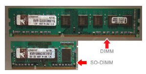
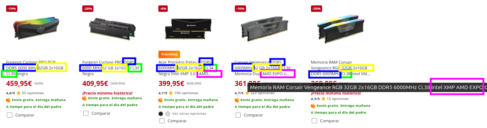
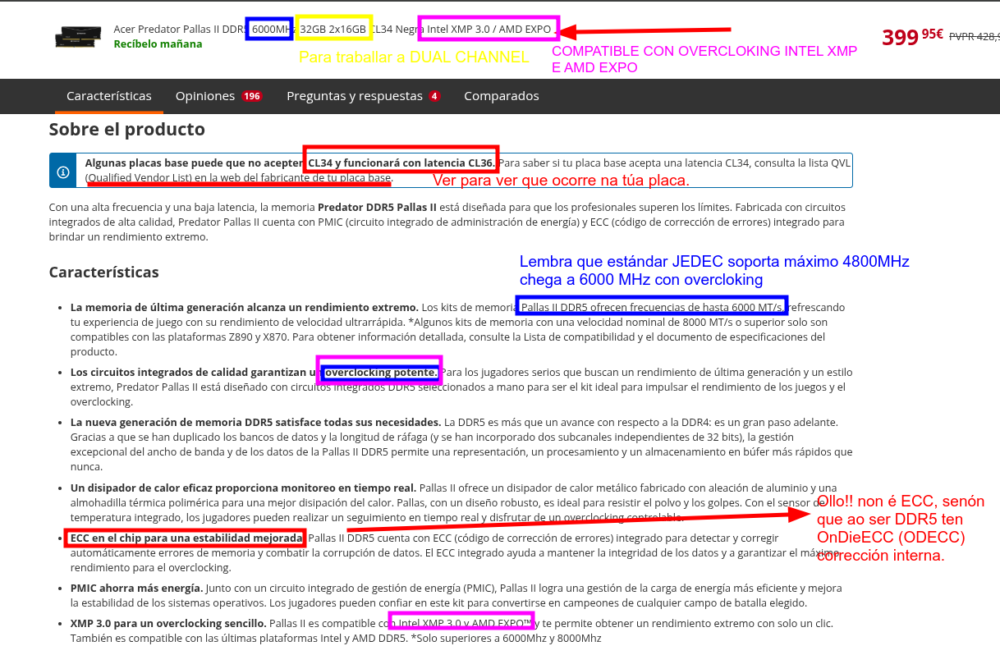
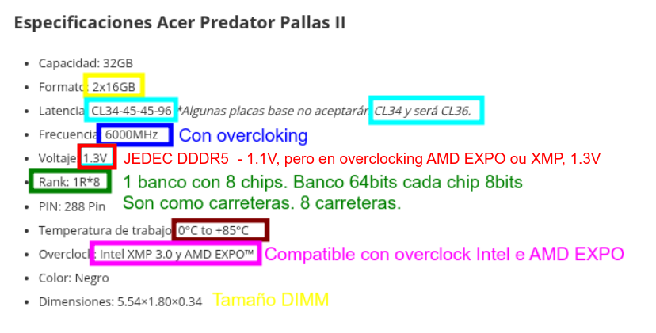
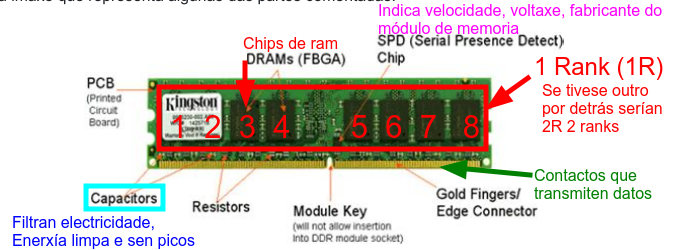
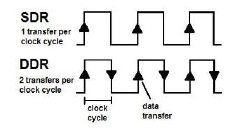
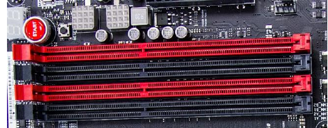

Memoria RAM: Fundamentos Técnicos
Definición Técnica
A Memoria RAM (Random Access Memory) é un dispositivo de almacenamento volátil de acceso rápido integrado na placa base do computador. Os datos almacenados desaparecen ao desconectar a alimentación eléctrica. Funciona como zona de traballo do procesador, almacenando instrucións e datos que precisa durante a execución de programas.
Características Principais
- Acceso Aleatorio: Calquera posición de memoria pode ser accedida en tempo constante
- Volátil: Perda de datos ao cortar a alimentación
- Síncrona: Operacións sincronizadas co reloxo do sistema
- Tecnoloxía DRAM: Capacitores que almacenan información en forma de carga eléctrica
1. Guía de Compra: Memoria RAM para PC ou Portátil
Para elixir a memoria correcta para un PC ou portátil, debemos fixarnos nestes catro piares fundamentais:
- DIMM (Dual In-line Memory Module): Módulos longos deseñados para ordenadores de sobremesa.
- SO-DIMM (Small Outline DIMM): Módulos máis curtos e compactos, específicos para portátiles, Mini-PCs e algunhas placas base integradas.

1.2. Tecnoloxía e Xeración
- Compatibilidade: A xeración (DDR4, DDR5, etc.) debe coincidir coa ranura da placa base.
- Non hai retrocompatibilidade. Cada xeración ten unha muesca física (key notch) nunha posición distinta e traballa a voltaxes diferentes para evitar erros de instalación.
1.3. Frecuencia e Capacidade
- Velocidade (MT/s): É vital verificar que tanto o procesador (CPU) como a placa base soportan a frecuencia da memoria (ex. 3200 MT/s ou 6000 MT/s).
- Cantidade (GB): Debe ir acorde ao uso do sistema. Actualmente, o estándar mínimo recomendable para un rendemento fluído é de 16 GB.
1.4. Canle de Memoria (Dual Channel)
- Configuración: Sempre que sexa posible, é preferible instalar os módulos por parellas (ex. 2x8 GB en lugar de 1x16 GB).
- Vantaxe: Isto activa o Dual Channel, o que permite duplicar o ancho de banda de comunicación entre a RAM e o procesador.
1.5 Cantidade de memoria que soporta a placa
Mirar no manual da placa as especificacións da cantidade máxima de memoria que soporta.
- En canto a ECC, esta técnica é para servidores, aínda que hai algunha CPU AMD que a soporta, son poucos modelos de alta gama, e que hai que revisar ben a placa.

Analizamos esta memoria antes de ver características
Acer Predator Pallas II DDR5 6000MHz 32GB 2x16GB CL34 Negra Intel XMP 3.0 / AMD EXPO


Estrutura dos módulos de RAM

2. Tipos de Memoria RAM Actuais
2.1 DDR4 (Double Data Rate 4)
Especificacións Técnicas:
- Voltaxe: 1.2V ± 0.06V
- Frecuencia: 2133 MHz - 3200 MHz (estándar JEDEC)
- Overclocking: Até 4800+ MHz con XMP
- Pines: 288 pines (DIMM estándar)
- Canles de Datos: 64 bits por DIMM
- Ancuro de Banda: 21.3 GB/s (DDR4-2666) a 51.2 GB/s (DDR4-4800)
A placa base ten un circuito regulador de voltaxe e envía a enerxía lista aos módulos de memoria.
Estructura da memoria:
- 8 ou 16 bancos de memoria
- Dentro dos bancos de memoria a información organízase en filas e columnas, como se fose unha folla de cálculo:
- Fila (tamaño): 512 bits
- Columna(tamaño): variable segundo o modelo (En función do tamaño do chip)
- Cando a CPU le un dato, non lé so ese bit, senón que le a fila completa de 512bits e gárdaa nun buffer (Row Buffer)
2.2 DDR5 (Double Data Rate 5)
Especificacións Técnicas:
- Voltaxe: 1.1V ± 0.05V
- Frecuencia: 4800 MHz - 6400+ MHz (estándar JEDEC)
- Pines: 288 pines (DIMM estándar, fisica diferente)
- Canles de Datos: 2× 32 bits (arquitetura de doble canle interna)
- Ancuro de Banda: 38.4 GB/s (DDR5-4800) a 102.4 GB/s (DDR5-6400)
- Sub-canles: 2 sub-canles de 16 bits por lado (para xestión interna dentro do canle de 32bits)
- Regulador Integrado: PMIC (Power Management IC) na DIMM
O circuíto regulador de voltaxe (PMIC) está integrado no propio módulo de memoria, os módulos son máis complexos e quéntanse algo máis que os predecesores.
Vantaxes sobre DDR4:
- Voltaxe reducida (menor consumo, 8.3% máis eficiente)
- Doble ancho de banda teórico: débese a que nas DDR5, cada módulo de memoria divídese en 2 sub-canles internas, de 32 bits cada unha, de forma que se os núcleos da CPU solicitan info de pequeno tamaño a memoria, cada subcanle pode dar información independente á CPU, estas canles poden ser de lectura ou escritura, facendo que o tráfico sexa máis fluído, xa que unha canle pode estar facendo unha lectura e outra unha escritura, mentres nas DDR4, ao haber un so canle, so pode facer unha operación ao mesmo tempo.
- Mellor escalabilidade en frecuencia: xa qu eo módulo PMIC, módulo de regulación de voltaxe no propio chip reduce o ruído eléctrico e permite subir a frecuencia. A tecnoloxía ODECC, On-Die ECC, corrixe erros dentro do chip de memoria (non confundir esta tecnooxía coa ECC que teñen os módulos RAM dos servidores),
Isto indica que aínda que a igual ancho de banda, a eficiencia de acceso é moito mellor a de DDR5 motivado pola subdivisión de canles.
2.3 Comparativa DDR4 vs DDR5
| Parámetro |
DDR4 |
DDR5 |
| Voltaxe |
1.2V |
1.1V |
| Frecuencia Base |
2133-3200 MHz |
4800-6400 MHz |
| Ancho de Banda |
17-51 GB/s |
38-102 GB/s |
| Latencia CAS |
15-20 |
30-40 |
| Pines |
288 |
288 (diferente) |
| PMIC |
Externo |
Integrado |
| Consumo |
Normal |
Reducido |
Ollo! Cando o fabricante amosa DDR4-2666, xa está duplicando o flanco de subida e de baixada en DDR a frecuencia é 1333 e as MT/s son 2666

| Xeración |
Estándar JEDEC |
Velocidade (MT/s) |
Frecuencia Reloxo (MHz) |
| DDR4 |
DDR4-2133 |
2133 |
1066.5 |
| DDR4 |
DDR4-2666 |
2666 |
1333 |
| DDR4 |
DDR4-3200 |
3200 |
1600 |
| DDR5 |
DDR5-4800 |
4800 |
2400 |
| DDR5 |
DDR5-5200 |
5200 |
2600 |
| DDR5 |
DDR5-5600 |
5600 |
2800 |
3. Parámetros de Latencia e Timing
3.1 Latencia CAS (CL - CAS Latency) vs Latencia Real
Número de ciclos de reloxo que tarda en accederse aos datos desde o envío da orde de lectura.
A latenncias CAS, é distinta que a Latencia Real.
- DDR4: CL15-CL20 (típico CL16, necesita 16 ciclos para acceder)
- DDR5: CL30-CL40 (típico CL36-CL38, necesita 36 ciclos para acceder, pero nestas memorias a frecuencia é maior, así que a latencia real pode ser menor.)
$$\text{Latencia Real (ns)} = \frac{\text{CL}}{f \text{ MHz}} \times 1000$$
Exemplo DDR4-3200 CL16:
$$\text{Latencia} = \frac{16}{3200} \times 1000 = 5 \text{ ns}$$
Exemplo DDR5-6400 CL38:
$$\text{Latencia} = \frac{30}{6400} \times 1000 = 4.6 \text{ ns}$$
3.2 Timings
Os timings son os tempos de espera que o controlador de memoria ten que respectar entre as distintas operacións. Pénsao como os semáforos dunha cidade: aínda que un coche poida ir moi rápido (frecuencia), se os semáforos tardan moito en poñerse en verde, o tempo total de viaxe será maior.
Como a información está en Bancos e dentro destes en Filas e Columnas, hai uns tempos de acceso a fila, columna, desactivar esa fila, tempo que esa fila pode estar aberta,...
- tRCD (RAS to CAS Delay): É o tempo que pasa dende que se escolle a fila ata que se pode acceder á columna.
- tRP (RAS Precharge): É o tempo necesario para "pechar" unha fila e deixar o banco listo para abrir outra.
- tRAS (Row Active Time): Define canto tempo ten que estar aberta unha fila como mínimo para que os datos non se corrompan.
- tCR (Command Rate): é o tempo que tarda o controlador desde que selecciona un módulo antes de poder empezar a falarlle. Os valores poden ser: 1T é máis rápido, e 2T que é mais lento pero ofrece un sinal máis estable.
- tRFC (Refresh Cycle): Como a RAM é dinámica, perde a carga. Este valor indica canto tempo para a memoria para "recargarse".
3.3 Frecuencia e Ancho de Banda
$$\text{Ancho de Banda (MB/s)} = \text{ Frecuencia(MHz=MT/s)} \times Canles \times \text{Ancho do bus (bytes)} = \frac{\text{MT/s} \times 8}{1000}$$
Lembrade que a Velocidade de transferencia é o ancho de banda efectivo, a velocidade á que pasan realmente.
DUAL CHANNEL
Exemplo DDR4-3200 en dual channel:
- Ancho de banda = 3200 × 2 × 8 bytes = 51.2 GB/s
- MT/s = 3200 ( Megatransfers/segundo)
- Canles = 2
- Ancho bus = 64 bits = 8 bytes
Exemplo DDR5-6400 en dual channel:
- MT/s = 6400 ( Megatransfers/segundo)
- Ancho de banda = 6400 × 2 × 8 bytes = 102.4 GB/s
- MT/s = 6400 ( Megatransfers/segundo)
- Canles = 2
- Ancho bus = 64 bits = 8 bytes
SINGLE CHANNEL
Exemplo DDR5-6400 en Single Channel (1 so módulo de memoria nun PC):
- MT/s = 6400 ( Megatransfers/segundo)
- Ancho de banda = 6400 × 1 × 8 bytes = 51.2 GB/s
- MT/s = 6400 ( Megatransfers/segundo)
- Canles = 1
- Ancho bus = 64 bits = 8 bytes
e este caso, canto sería? Exemplo DDR4-3200 en single channel, 1 so módulo de memoria no PC??
# Resolve
4. Tecnoloxías de Optimización
4.1 Dual Channel
Concepto: A placa base dispoñe de 2 controladores de memoria independentes funcionando en paralelo.
Configuración::
- Dúas DIMM en canles diferentes
- Cada canle: 64 bits de datos en paralelo
- Ancho de banda total: 2× ancho de banda simple
Beneficio: +50% de rendimiento en operacións paralelas (transferencias simultáneas)
Organización Típica:
- Adoitan usarse os slots que están mais lonxe da CPU
- Na maioría das placas veñen coloreados da misma forma os slots que traballan en dual channel

Flex Memory
Algunhas placas base modernas teñen unha tecnoloxía chamada Intel Flex Memory. Imaxina que temos un módulo de 8 GB e outro de 4 GB.
Se os coloca correctamente nas slots de distintas canles (A2 e B2):
- Os primeiros 4 GB de cada módulo (8 GB en total) funcionarán en Dual Channel.
- Os 4 GB restantes do módulo maior funcionarán en Single Channel .
Isto axuda a que o sistema sexa máis eficiente incluso con módulos desparellos.
4.2 Triple Channel e Quad Channel
- Triple Channel: 3 DIMM en paralelo (plataformas HEDT Intel X79/X99) -- NON USADO A DÍA DE HOXE.
- Quad Channel: 4 DIMM en paralelo (plataformas servidor e HEDT). O bus é de 256bits.
- HEDT (High-End Desktop): Para usuarios profesionais que fan renderizado 3D ou edición de vídeo 8K.
- Servidores: É o estándar en máquinas que moven bases de datos ou virtualización masiva. Intel Xeon e AMD EPYC (estes últimos poden chegar incluso a 8 ou 12 canles de memoria!).
4.3 Overclocking de RAM en Estacións de Traballo
4.3.1. XMP (Intel eXtreme Memory Profile)
É un estándar de Intel que contén perfís de configuración predefinidos e probados polo fabricante da memoria. Permite que a placa base axuste automaticamente a frecuencia, voltaxe e timings por riba das especificacións estándar (JEDEC) para acadar o máximo rendemento.
XMP é de Intel. Porén, os fabricantes de placas base para AMD (como ASUS, Gigabyte ou MSI) levan anos incluíndo tecnoloxías para "ler" eses perfís de Intel. Nas BIOS de AMD aparece como DOCP, EOCP ou simplemente XMP.
Velocidades Comúns com XMP:
- XMP 3000, 3200, 3600, 4000, 4400, 4800 MHz
4.3.2 AMD EXPO (AMD eXtreme Memory Profile)
É a alternativa de AMD para a arquitectura DDR5. Funciona exactamente igual que o XMP, pero é un estándar aberto e está optimizado especificamente para maximizar a eficiencia e a velocidade nos procesadores AMD Ryzen.
- En placas AMD: Podes usar tanto memorias con XMP como con EXPO. A BIOS recoñecerá ambos.
- En placas Intel: O soporte para EXPO é menos común pero está empezando a aparecer en actualizacións de BIOS de gama alta. O máis habitual é mercar XMP para Intel.
Nos últimos procesadores con DDR5, JEDEC ten unha postura máis conservadora de 4800Mhz, e para chetar aos 6000MHz hai que empregar AMD Expo ou XMP
mpte: aínda que a RAM teña este perfil, o procesador e o chipset teñen que permitir facer este overcloking, por exemplo, en Intel, por exemplo, os chipsets serie "B" e "Z" permíteno, pero a serie "H" básica adoita estar limitada
5. Estándares e Organismos de Regulación de Hardware
A interoperabilidade entre compoñentes de distintos fabricantes é posible grazas a organismos que definen normas técnicas estritas:
-
JEDEC (Joint Electron Device Engineering Council): É o referente para a memoria RAM. Define os estándares físicos (como o número de pins en DIMM ou SO-DIMM) e os eléctricos (frecuencias base, voltaxes e latencias). Unha memoria "JEDEC" garante que funcionará en calquera placa base compatible sen configuración previa.
-
IEEE (Institute of Electrical and Electronics Engineers): Organización global que estandariza dende arquitecturas de computadores ata protocolos de rede. As súas normas aseguran que a comunicación entre compoñentes e sistemas siga regras lóxicas e físicas universais.
-
Consorcios Específicos (PCI-SIG e USB-IF): Grupos de empresas que desenvolven tecnoloxías concretas:
- PCI-SIG: Define o bus PCI Express, fundamental para a comunicación de alta velocidade en tarxetas gráficas e unidades NVMe.
- USB-IF: Xestiona todo o ecosistema USB, definindo conectores (como o USB-C) e velocidades de transferencia.
| Característica |
Estándar Aberto (ex. JEDEC/RAM) |
Consorcio con Licenza (ex. HDMI/USB) |
| Acceso á norma |
Calquera pode ler e implementar a norma sen pagar por ela. |
Require ser membro do consorcio ou pagar "royalties". |
| Fabricación |
Fomenta unha competencia total entre moitos fabricantes. |
O control está en mans dun grupo que dita quen pode usar a marca. |
| Evolución |
Máis lenta pero moi sólida e compatible. |
Máis rápida en funcións comerciais (novos logos, cables). |
Se o estándar fose pechado e o fabricante decidise deixar de dar soporte ou comezase a cobrar licenzas carísimas polo acceso aos planos técnicos, o técnico atoparíase con que os módulos de reposto serían moito máis difíciles de atopar e probablemente moitísimo máis caros, xa que non habería competencia de terceiros fabricantes que puidesen replicar esa tecnoloxía de xeito legal.
5. Estrutura Física e Empaquetado
5.1 DIMM (Dual In-line Memory Module)
Especificacións Estándar:
- Tamaño: 133.35 mm × 30 mm (altura estándar)
- Pines: 288 pines (DDR4/DDR5)
- Altura con disipador: Até 47 mm (requiere revisión de compatibilidade con coolers)
- Slots na placa base: Typ. 2-4 (M.2 compatibles en DDR5)
5.2 SO-DIMM (Small Outline DIMM)
Para portátiles e sistemas compactos:
- Tamaño: 69.15 mm × 30 mm
- Pines: 260 pines (DDR4) ou 262 pines (DDR5)
- Altura: 7.5-17 mm (máis compacta)
5.3 RG-DIMM (Registered DIMM)
Para servidores:
- Rexistro de voltaxe: nos servidores o controlador de memoria é un chip intermedio, que recibe as sinais de petición de memoria e estabilízaas antes de solicitarllas á RAM.
- ECC bits que permiten detectar e corrixir erros.
- Memoria Persistente, Tecnoloxías que permiten que os datos da RAM non se borren ao apagar o servidor.
- Compatibilidade: Non é compatible con placas base de desktop
5.4 Xerarquía de Memoria (Die Layout)
No seguinte esquema pode verse como está estruturada a memoria RAM, organización, como se xestiona o control interno da memoria e pines que usa para que cousa .
DIMM (133.35 × 30 mm)
├─ 8-16 Bancos de Memoria
│ ├─ Filas (Rows): 16,384 - 65,536
│ └─ Columnas (Columns): 1024-2048
├─ Circuitería de Control
│ ├─ Controlador de Fila
│ ├─ Controlador de Columna
│ └─ Circuitería de Refresco
└─ Pines de Conexión (288)
├─ Datos (DQ0-DQ63): 64 bits
├─ Enderezo (A0-A17): 18 bits
├─ Control (RAS, CAS, WE, CS)
└─ Enerxía (VDD, VSS, VREF)
6. Procedementos de Seguridade Específica para Memoria RAM
6.1 Descarga Electrostática (ESD)
CRÍTICO: Non tocar ningunha pista de cobre das DIMMs directamente
Pasos de prevención:
- ✅ Antes de manipular: Ponte una pulseira antiestática conectada a masa
- ✅ Protección do lugar de traballo: Usa tapete antiestático conexado
- ✅ Desconexión: Desconecta a fonte de alimentación antes de abrir o computador
- ✅ Descarga previa: Toca a estrutura metálica de case antes de coller a DIMM
- ✅ Almacenamento: Guarda DIMMs en bolsas Faraday ou antiestáticas
6.2 Seguridade Eléctrica
- ⚠️ Non manipular con computador encendido (risco de curtocircuito ou dano a placa base)
- ⚠️ Desconectar fonte de alimentación antes de abrir a carcasa
- ⚠️ Desconectar de tomacorrente (non basta con apagar; hai capacitores na fonte cargados)
6.3 Procedementos de Instalación Seguros
- Desconecta e espera 5 minutos para dissipación de carga
- Localiza os slots correctos (consulta manual da placa base)
- Abre plenamente as pestañas laterais do slot (soan con clic)
- Aliña a muesca na DIMM co pin central do slot (previne erros)
- Inserta con presión uniforme en ambos extremos (evita damping lateral)
- Reconnecta e proba (Comprueba que o BIOS detecta a memoria)
6.4 Sinais de Dano ou Fallo
- Ordenador non inicia (beep repetido do speaker)
- Aviso de memoria instalada incorrecto (pantalla verde ou POST fallido)
- Memoria non detectada en BIOS/UEFI
- Erros de corrección ECC ou fallos de integridade
Solución: Extrae, limpa os contactos con éter (en lugar ventilado) ou alcohol isopropílico, e reinserta coidadosamente.
7. Configuracións Recomendadas
| Uso |
Recomendación |
Especificación |
| Gaming 1080p/1440p |
16 GB Dual Channel |
DDR5-6000 CL30 EXPO |
| Workstation (CAD/3D) |
32 GB Dual Channel |
DDR5-5600 CL36 Intel XMP |
| Servidor |
64-128 GB |
DDR5 ECC RG-DIMM |
| Portátil Gaming |
32 GB SO-DIMM |
DDR5-5600 |
8. Referencias Técnicas
- JEDEC Standard DDR4 (JESD79-4)
- JEDEC Standard DDR5 (JESD79-5)
- Intel XMP Specification v3.0
- AMD EXPOSITION Memory Profile (AGESA 1.0.8.1+)
9. Páxinas interesantes